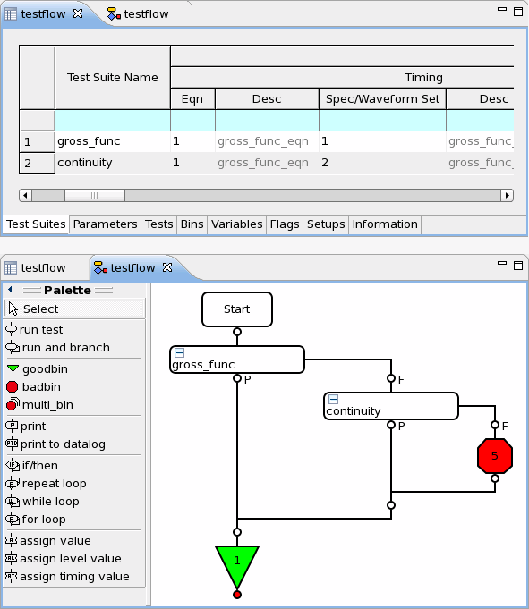

Exporting a testflow to a CSV file
The CSV (Comma-Separated Values) file format is a file type for storing tabular data. The testflow tool lets you export a testflow to a CSV file. The export function gives you a convenient way to export testflow details for reporting and documentation purposes.
Before you begin
Make sure that the testflow has been created.
Procedure
Example
This is an example of a testflow and the resulting CSV file.

The following is the related CSV file as displayed in a text editor. (For a tabular view, you can also open the file in spreadsheet programs like Excel.)
$,Testsuites >,"Testsuite Name",Type,Name,LibPath,"Tim Eqn","Tim Eqn Desc","Tim Spec", "Tim Spec Desc","Tim Set","Tim Set Desc","Lev Eqn","Lev Eqn Desc","Lev Spec", "Lev Spec Desc","Lev Set","Lev Set Desc","Ana Set","Ana Set Desc", Pattern,Pass/Fail,"Exec Time (ms)","Exec Num","Test Level",Bypass, "Set pass","Set fail",Hold,"Hold on fail","Output on pass","Output on fail", "Pass value","Fail value","Per pin on pass","Per pin on fail","Set breakpoint", "Log MX Waveforms","Fail per label","FFC enable","FFC scan info enable", "Log first","FFV enable","FRG enable","H/L/I/U (multiple execution)", "HW DSP disable","Site Match","Allow Parallel","Site Control",Size,Cycle,#1, "Testsuite Comment" ,continuity,T,continuity,,1,,2,,1,,2,,2,,1,,,,"""gross_func""",,,,0,F,F,F,F, F,T,T,T,T,T,T,F,F,F,F,F,1,F,F,F,F,UNDEF,T,PARALLEL,,,1, ,gross_func,T,functional,,1,,1,,1,,2,,2,,1,,,,"""gross_func""",,,,0,F,F,F,F, F,T,T,T,T,T,T,F,F,F,F,F,1,F,F,F,F,UNDEF,T,PARALLEL,,,1, >,"Testmethod type parameter","Testmethod type value" ,UTMBased,F $,Parameters >,"Testsuite Name","Action Name","Name 1","Type 1","Value 1" ,continuity,continuity,continuity,,"@;0;uA; -80;mV; 200;mV; 800;mV; 900;ms; 0;1;Continuity ($P);mV;;1;" ,gross_func,functional,functional,, $,Tests >,"Testsuite Name","Test Name","Test Number","Lower Limit","Lower Symbol", "Upper Symbol","Upper Limit" ,gross_func,[TF]Functional,,,N/A,N/A, ,continuity,[TF]Continuity,,,N/A,N/A, $,Bins >,"Software Bin","Software Bin Desc","Hardware Bin","Hardware Bin Desc", Type,"Bin Color","Bin ReProbe","Bin OverOn" ,1,Pass,,,good,Green,no,yes ,5,"Failed Continuity",,,bad,Red,no,yes $,Variables >,Name,Type,"Initial Value","Current Value" ,VIL,DOUBLE,2.4,2.4 ,VIH,DOUBLE,2.6,2.6 ,i,DOUBLE,0,0.0 $,Flags >,Flags,"Flag Type",Value ,datalog_formatter,SYSTEM,off ,datalog_sample_size,SYSTEM,1 ,graphic_result_display,SYSTEM,on ,state_display,SYSTEM,off ,print_wafermap,SYSTEM,off ,ink_wafer,SYSTEM,off ,max_reprobes,SYSTEM,1 ,temp_monitor,SYSTEM,on ,calib_age_monitor,SYSTEM,on ,diag_monitor,SYSTEM,on ,current_monitor,SYSTEM,on ,log_events_enable,SYSTEM,on ,tm_crash_as_fatal,SYSTEM,off ,set_pass_level,TESTFLOW,0 ,set_fail_level,TESTFLOW,0 ,set_bypass_level,TESTFLOW,0 ,hold_on_fail,TESTFLOW,off ,global_hold,TESTFLOW,off ,debug_mode,TESTFLOW,off ,debug_analog,TESTFLOW,off ,parallel_mode,TESTFLOW,on ,site_match_mode,TESTFLOW,auto(on) ,global_overon,TESTFLOW,off ,limits_enable,TESTFLOW,off ,test_number_enable,TESTFLOW,on ,test_number_inc,TESTFLOW,1 ,log_cycles_before,TESTFLOW,0 ,log_cycles_after,TESTFLOW,0 ,unburst_mode,TESTFLOW,off ,sqst_mode,TESTFLOW,off ,warn_as_fail,TESTFLOW,on ,rf_cal_enable,TESTFLOW,on ,rf_cal_interp,TESTFLOW,off ,rf_dembedCal_enable,TESTFLOW,off ,use_hw_dsp,TESTFLOW,off ,buffer_testflow_Log,TESTFLOW,off ,check_testmethod_api,TESTFLOW,off $,Setups >,Setup,File ,"Pin Configuration",pins_soc ,Levels,levels ,Timing,timing ,Pattern,all.binl ,"Pin Attributes", ,"Channel Attributes", ,"Analog Control", ,Waveform, ,Routing, ,"Test Table", $,Information >,Name,Value ,Description, ,"Device Name", ,"Device Revision",1 ,"Test Revision", $,FlowSequence >,Index,"Flow Node",Argument ,1,run,gross_func ,1_1,FAIL, ,1_1_1,run,continuity ,1_1_1_1,FAIL, ,1_1_1_1_1,"stop bin",5 ,2,"stop bin",1
Functional changes
- Introduced before SmarTest 6.3.2
- SmarTest 7.2.0: Removed report_to_file flag
- SmarTest 7.2.0: Removed report_to_printer flag
- SmarTest 7.2.0: Removed datalog_to_file flag
- SmarTest 7.2.0: Removed datalog_to_printer flag
- SmarTest 7.2.0: Removed datalog_to_report_win flag
- SmarTest 7.2.0: Removed dsp_file_enable flag
- SmarTest 7.2.0: Removed test_number_manager flag
- SmarTest 7.2.0: Removed test_num_col_offset flag
- SmarTest 7.4.5: Removed stdf_generation flag